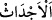

üfürmesiyle olacaktır. Burada kasdedilen Allah Teâlâ’nın bütün canlıları öldüreceği
birinci üfürüş değil, bütün ölüleri dirilteceği ikinci üfürüştür. İki üfürüş arasında kırk
yıl vardır.[147] Yeryüzünde çok korkunç şeyler, zelzeleler olduktan sonra bulunduğu hal
üzere sâkin/rahat bir şekilde kalır. Yeryüzünde yaratılmışlardan canlı bir varlık
olmadığı halde gökten yağmur yağar, sular akar, ağaçlar meyve verir. İki üfürüş arasında
kırk yıl geçtikten sonra Allah Teâlâ arşın altından “hayat/can suyu” denilen erkeklerin
menisi gibi sert bir su yağdırır. Otların bittiği gibi insanların bedenleri biter. Yer insanın
acbü’z-zeneb/kuyruk sokumu hariç bütün bedenini yer/eritir. Acbü’z-zeneb de çekirge
gözü gibi gözle görülmeyecek kadar kalır. İşte yaratılma bundan olur. Güneş ışınlarında
uçuşan tozlar gibi insanın cüzleri/parçaları onun üzerinde bir araya getirilir. Bedenler
tamam olunca Allah Teâlâ İsrafil (a.s.)’ı diriltir. O da sûra üfürür. Bunun üzerine her
ruh kendi cesedine doğru uçar. Sonra da kabir yarılıp açılır.
“Bir de bakarsın ki onlar” sonraki âyetin delâlet ettiği gibi kâfirler hiç
beklemeksizin “kabirlerinden kalkıp koşarak Rablerine giderler.” Rablerinin ve
mutlak olarak işlerinin sâhibinin dâvetine giderler. Bu dâvet İsrâfil (a.s.)’ın diriliş için
yaptığı dâvettir. Ya da onlar kabirlerinden kalkıp koşarak hesap ve yapılanların
karşılığının verilmesi için hazırlanan Rablerinin huzuruna (mevkıf) giderler. Beytü’l-
makdis’in haşr ve neşr yeri olduğu sâbit olmuştur.
el-Kamûs’ta geçtiği üzere “
” kelimesi, kabir demek olan “
”in çoğuludur.
Eğer “Korkunç ses dağları bile yerinden oynattığı halde o vakitte kabirler nerede
olacak?” denirse, şöyle cevap verilir: Allah Teâlâ her ölünün cüzlerini kabre konulduğu
yerde toplayacak ve o kişi oradan dirilip çıkacaktır. İşte o yer o kimsenin kabridir.
“O gün onlar kabirlerinden fırlaya fırlaya çıkarlar.” (el-Meâric, 70/43) âyetinin
delâlet ettiği onların kabirlerinden kalkıp koşarak Rablerine gitmeleri, isteyerek değil
zorunlu bir gidiştir. Çünkü Allah Teâlâ: “huzurumuzda hazır edilirler.” (Yâsîn,
36/53) buyurmaktadır.
Allah Teâlâ’nın “Nihayet Sûr’a üfürülecek” kavlinden sonra hemen/ansızın olma
mânâsını ifade eden “ ”nın getirilmesi, Allah Teâlâ’nın kudretinin kemaline ve
muradının iradesinden hiçbir zaman geri kalmayacağına işâret etmektedir. Çünkü Allah
Teâlâ bu süratli koşmanın/fırlamanın sûra üfürme vaktinde gerçekleşeceğine ve ondan
sonraya kalmayacağına hükmetmiştir. Halbuki bu koşma, bazı merhalelerden sonra
olacaktır. Bu merhaleler ise dağılan cüzlerin ve toz toprak olan kemiklerin toplanması,
birleştirilmesi, diriltilmesi, ayağa kalkması, sonra da koşmasıdır.
Eğer denirse ki: “Allah Teâlâ bir başka âyette “Sonra ona (sûra) bir daha
üflenince, bir de ne göresin, onlar ayağa kalkmış bakıyorlar!” (ez-Zümer, 39/68)
buyurmaktadır. Burada ise “Bir de bakarsın ki onlar kabirlerinden kalkıp koşarak
Rablerine giderler” buyurmuştur. Halbuki ayağa kalkmak koşmaktan başkadır. Bunların
her biri de bulundukları yerde ansızın mânâsında olan “ ” ile ifade edilmiştir. Bu
durumda ayağa kalkma ile koşmanın beraber olması gerekir.”